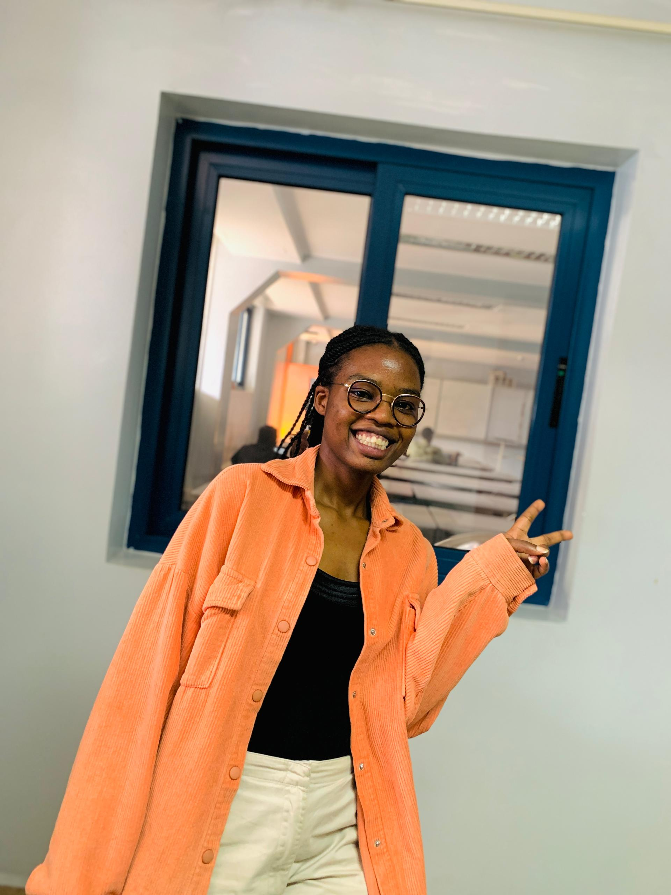

As a software engineering student at Adventist University of Central Africa, I've dedicated myself to mastering the software development while gaining practical experience through various projects. My journey has been shaped by a deep interest in object-oriented programming, database architecture, and creating solutions that bridge the gap between technical excellence and user needs.
BSc. Software Engineering
Adventist University Of Central Africa
2024 - Present
UI/UX Design
Full Stack Development
